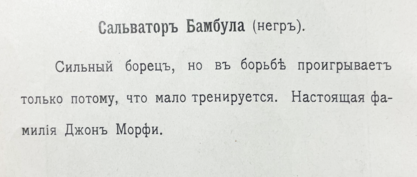

Ни́гер , также Ниге́р (фр. Niger [niʒɛʁ] ), официально — Респу́блика Ни́ге́р (фр. République du Niger) Нигер полностью находится на Африканской платформе, сложенной из докембрийских кристаллических пород — гранитов и сланцев. Кристаллические породы на большей части территории перекрыты осадочным чехлом различных возрастов: палеозойского, мезозойского, третичного и четвертичного. Три выхода кристаллических пород на поверхность богаты полезными ископаемыми. Наибольшим таким выходом является плато Аир, площадью 60 тыс. км². На правом берегу реки Нигер докембрийские породы выходят в виде скалистых холмов, образуя плато Липтако, занимающее 30 тыс. км². На юге, около Зиндера, древние породы образуют две гряды гранитных холмов площадью 7 тыс. км². Гранитные холмы-останцы выходят также в пустыне Тенере и местности Кавар. Осадочный чехол в западной, южной и восточной частях страны сложен морскими, озёрными и континентальными отложениями, а в северной части представляет собой мощные толщи песков. Интенсивная эрозия и длительность геологических процессов привели к выравниванию большей части территории Нигера[12]
ЮАР расположена на южной оконечности Африки. Длина береговой линии страны составляет 2798 км.Важнейшим пунктом в истории и политике ЮАР стал расовый конфликт между чёрным большинством и белым меньшинством. Своей кульминации он достиг после того, как в 1948 году был установлен режим апартеида, просуществовавший до 1990-х годов. Инициатором введения дискриминационных законов стала Национальная партия (в СССР её называли Националистической). Эта политика привела к долгой и кровопролитной борьбе, в которой роль витрины сыграли чёрные активисты, такие как Стив Бико, Десмонд Туту и Нельсон Мандела. Позже к ним присоединились многие белые и цветные потомки смешанного населения, а также южноафриканцы индийского происхождения. ЮАР имеет площадь 1'221'038 км², по этому показателю страна занимает 24-е место в мире. ЮАР имеет площадь 1'221'038 км², по этому показателю страна занимает 24-е место в мире.
Египет является самой населённой страной на Ближнем Востоке и второй по численности населения на африканском континенте.а рубеже IV—III тыс. до н. э. около двадцати городов-государств по верхнему течению Нила, и столько же по нижнему течению, были объединены под властью двух правителей. Вскоре война между Верхним и Нижним Египтом завершилась победой царя Верхнего Египта, который стал единовластным правителем страны. Так появилось большое государство с единым центром, управляемое бюрократическим аппаратом, во главе с фараоном. на севере территория страны омывается водами Средиземного моря, на востоке — Красным морем, при этом оба моря соединены посредством искусственно сооружённого Суэцкого канала. Этимология этого слова, возможно, связана с населённостью Египта и большим количеством городов, расположенных близко друг от друга. На диалекте современных египетских арабов это название звучит как «Маср». самый известный профессиональный теннисист Беларуси. Особого успеха добился в парном разряде, сорвав серию международных наград. Вывел белорусскую сборную на лучшее место за всю её историю на Кубке Дэвиса. Заслуженный мастер спорта, бывшая первая ракетка мира в парном разряде, олимпийский чемпион в миксте.
| Пары | Исит1 | ||
| Исит3 | Физкультура | ||
| Исит2 | Кяр | ПО | Математический анализ |
| Физкультура | Английский язык | Математический анализ | |
| РАИП | АЛОВС | КЯр | |
СНегр (от исп. negro «чёрный (цвет)») — в русском языке основное название людей негроидной расы. Кроме того, в России и странах СНГ неграми называют также и особо темнокожих мулатов, хотя в регионах компактного проживания темнокожего населения (например, в Латинской Америке и ЮАР) между ними проводится чёткое различие. В английском языке термин «негр» (англ. negro) исторически использовался для обозначения чернокожих африканцев. Слово negro означает «черный цвет» в испанском и португальском языках, откуда оно было заимствовано в английский язык[1]. Термин может быть истолкован как оскорбительный, безобидный или полностью нейтральный, в значительной степени в зависимости от региона или страны, где он используется, а также от контекста, в котором он применяется. В западном мире термины «негр» и «чёрный» могут рассматриваться как оскорбительные в связи с тем, что они были навязаны рабовладельцами[2]. «Негроидная раса» является устаревшим[3][4] понятием расовой классификации, в рамках которой рассматривается как одна из больших рас человечества[5][6][7]. С появлением современной генетики концепция отдельных человеческих рас в биологическом смысле устарела[8].
В сочетании с отдыхом, стремлением к постепенному улучшению физического здоровья, повышению уровня интеллекта, получению морального удовлетворения, к совершенству, улучшению личных, групповых и абсолютных рекордов, славе, улучшению собственных физических возможностей и навыков спорт предназначен для совершенствования физико-психических характеристик человека.

В дореволюционной России, в XVII—XVIII веках, применительно к чернокожим выходцам из Африки использовалось слово арап[9][10], самым известным из которых был арап Петра Великого, прадед Александра Сергеевича Пушкина. Ситуация в современной России заметно отличается от вышеописанной. Люди негроидной расы в России и СССР всегда были (и в значительной степени остаются) экзотикой, и даже приезд в страну во второй половине XX века значительного количества африканских студентов и появление у некоторых из них детей-мулатов не особенно изменило ситуацию[источник не указан 1329 дней]. По определению Большой российской энциклопедии русское слово «негры» определяет только представителей негрской расы, а не негроидной в целом[11][12]. Заимствованное из английского языка слово «ниггер» (nigger) употребляется в его оригинальном значении — как расистское оскорбительное наименование чернокожего. Антропологический термин «негрито́с» в просторечии используется как шутливое, а слово «черномазый» или «чёрный» — как оскорбительное. Слово «негр» в современных словарях русского языка не имеет стилистических помет и относится к общеупотребительным[13]. Однако в последнее время, вслед за изменениями в английском языке, появилось мнение о том, что это слово стало нести оскорбительный оттенок и в русском языке[14]. Фонд «Гражданское содействие» рекомендует использовать вместо него термины «темнокожий», а также «африканец», «афроамериканец», «афророссиянин» и аналогичные[14]..